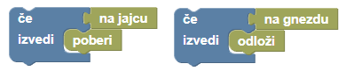
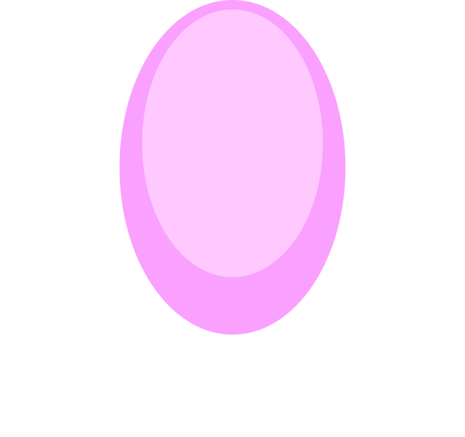
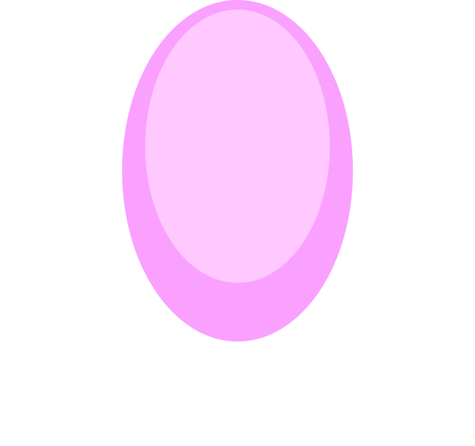

Pišek je našel zanimiva rožnata jajca, ki na prvi pogled delujejo kot čokoladna jajca. Odločil se je pošaliti in jajca skriti v gnezda kokoši. S pomočjo programskih blokov napiši program, ki bo vodil Piška. Poleg osnovnih programskih blokov za premikanje in blokov zanke, imaš v tokratni nalogi na voljo tudi sklop blokov senzor – tega uporabiš, da lahko Pišek zazna ali se je ustavil na jajcu ali na gnezdu.
Naloga ima tri teste. To pomeni, da bo moral isti program pravilno delovati na vseh treh testih. Dodan je sklop blokov Logika, ki ga morda še ne poznaš. Tega uporabljaš pri tvorbi pogojnih stavkov.

Pogojne stavke uporabljaj v kombinaciji z zankami. Tako bo program bolj pregleden in učinkovit.


 
